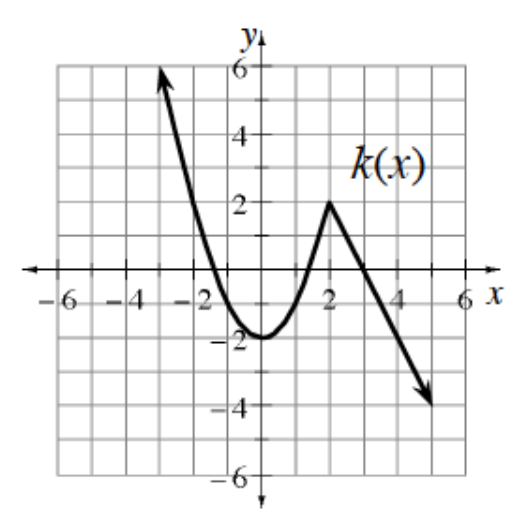

Give an example of a function \(g(x)\) such that \(\frac{1}{g(x)}\) has vertical asymptotes at \(x=-1\) and \(x=2\).
Express \(2+2.5+3+3.5+\dots+9.5\) using sigma notation. Do not calculate the sum.
Graph \(y=(x-1)(x+3)\). For what values of \(x\) is \(y\le0\)? Express your answer as an inequality. Was the factored form of the equation easy to graph? Do you see a connection between the equation, the factors, and the solution to the inequality?
Simplify: \(\frac{3x}{x+2}+\frac{2x}{x-2}\)
Use the properties of exponents and matching bases to solve the following equations.
\(4^{x+1}=\sqrt{2^x}\)
Evaluate each value for the function \(f\).
\(f(2)\)
\(f(-3)\)
\(f(i)\)
\(f(3.5+1.5i)\)
State the coordinates of any holes and the equations of any asymptotes for the function \(f(x)=\frac{2x^2+3x-2}{x^2-4}\). Then sketch a graph of the function.
This problem is a checkpoint for graphing transformations of functions.
Given the graph of \(y=k(x)\) shown, sketch the following transformations.
\(y=k(x-2)+3\)
\(y=k(-x)-2\)
\(y=\frac{1}{2}k(x)+1\)
